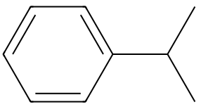

平成24年度 問2 有機化学及び燃料
次の反応のうち、生成物が誤っているものはどれか。
①
希硫酸中で、アニリンと亜硝酸ナトリウムとの反応でベンゼンジアゾニウム塩を合成。
②
クメンと酸素を出発物質として、アセトンとフェノールを合成。
③
p －キシレンを過マンガン酸カリウムで酸化してイソフタル酸を合成。
④
白金触媒存在下、 o －キシレンを水素で還元して1, 2－ジメチルシクロヘキサンを合成。
⑤
濃硫酸の存在下、ベンゼンに三酸化硫黄を反応させてベンゼンスルホン酸を合成。
正答
③ p －キシレンを過マンガン酸カリウムで酸化してイソフタル酸を合成。
p－キシレンを酸化すると、ベンゼン環の対角の位置にある2つのメチル基がカルボキシ基に酸化されてテレフタル酸が生成します。過マンガン酸カリウムが強力な酸化剤であることからベンゼン環に結合したメチル基を酸化できます。
2番はフェノールの工業的製法としても用いられるクメン法です。

5番の三酸化硫黄と濃硫酸との混合物は発煙硫酸と呼ばれます。